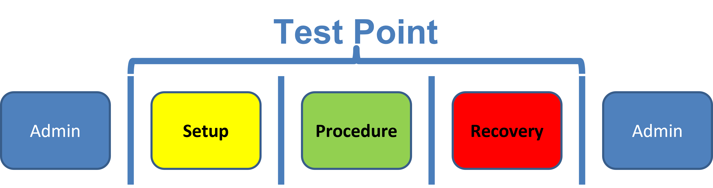
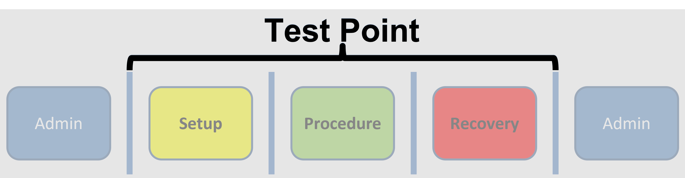
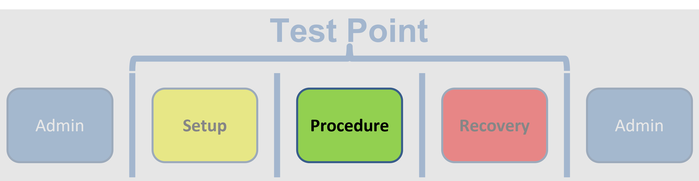
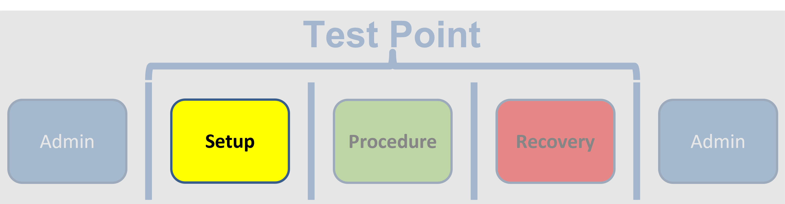
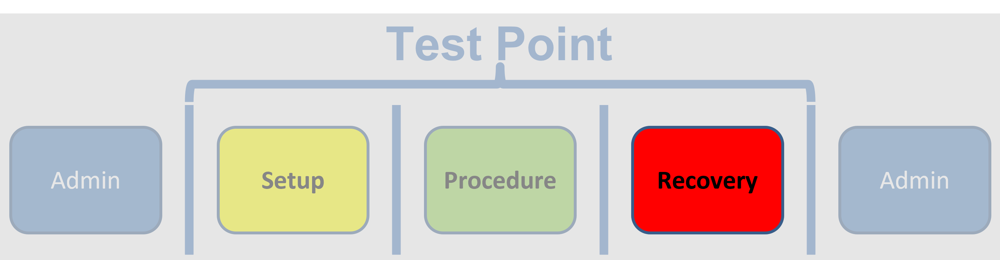
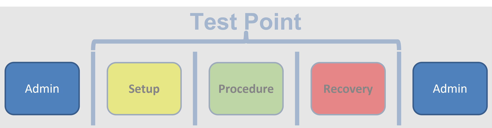
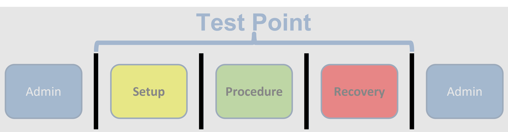
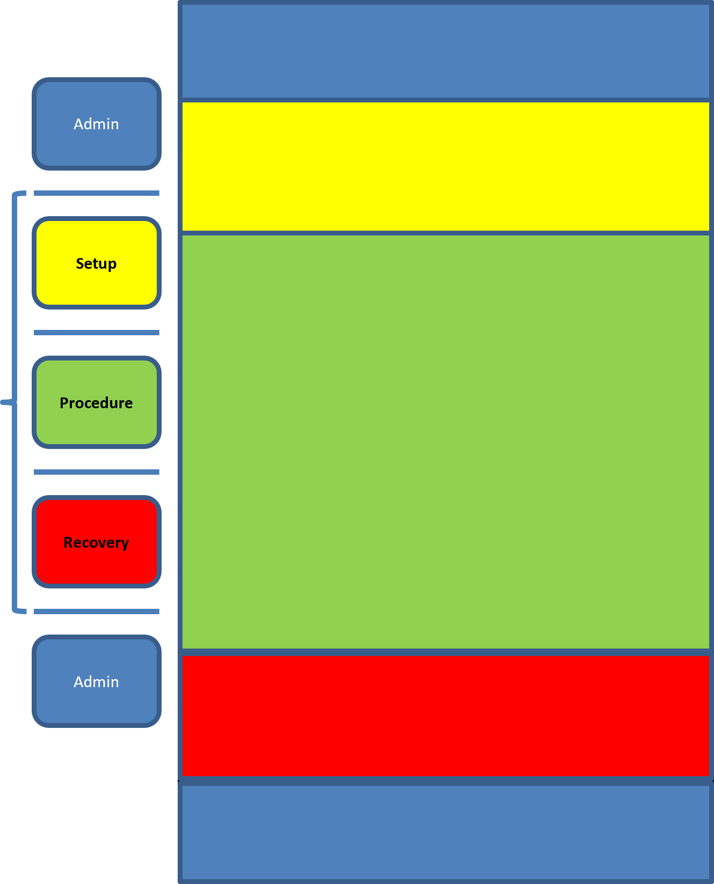
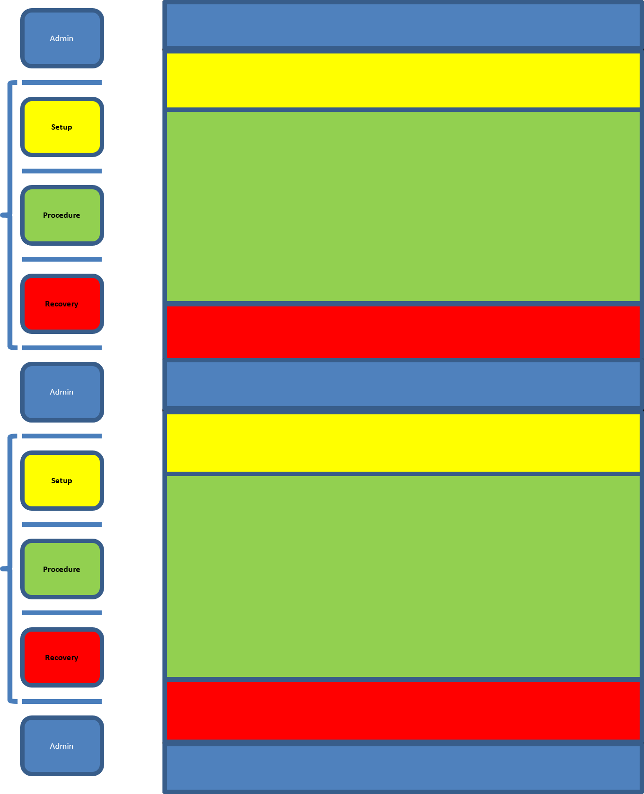
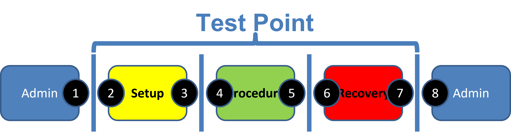

Appendix D — Test Point Flow
D.1 The problem
Common Test Conduct Errors:
- Omitted or improperly timed communication
- Poor transitions between test points
Hypothesis
A causal factor in both successful and error-prone test conduct is the understanding (or misunderstanding) of where and when critical phases of a test point begin and end.
Which begs the question, what ARE the “critical phases of a test point”?

D.2 A Test Point

The smallest unit of flight test comprised of a beginning, a middle, and an end.
D.3 Procedure

The actions of the operator and the system that generate data to support a test objective
D.4 Setup

The actions of the operator and the system that establish the conditions for a successful Procedure, including geometry, geography, system state, etc.
D.5 Recovery

The actions of the operator and the system that safely allow resumption of “normal” operations.
D.6 Admin

The actions of the operator and the system before the test, between test points, or after the test.
D.7 Transitions

The gates from one critical phase to the next that establish the cadence of the test.
D.8 The structure approach
For each test point, the test team
- defines the contents of each critical phase,
- determines entry and exit criteria through the transitions,
- creates a communications plan to support the transitions, and
- creates mission materials to assist in test conduct
D.9 Application to test card creation

Each test card reflects the critical phases of the test point under consideration.

Multiple test points can be put on a single page! The recovery/admin/setup phases between each point are explicitly included, instead of just a string of Procedure phases.
D.10 Application to Comm Plan

- Test: “Ready for next point”
- Control: “Cleared to [condition/configuration]”
- Test: “On conditions”
- Control: “Cleared to maneuver”
- Test or Control: “Maneuver complete/Recover(ing)”
- Control: “Cleared to [condition/configuration]”
- Test: “On conditions/Configuration complete/Recovered”
- Control: “Point complete. Next point is X at Y”
- Odd = Exit
- Even = Entry
- The Key to Success:
- The test team defines the content and duration of each critical phase and
- identifies exit and entry criteria for the transitions between phases